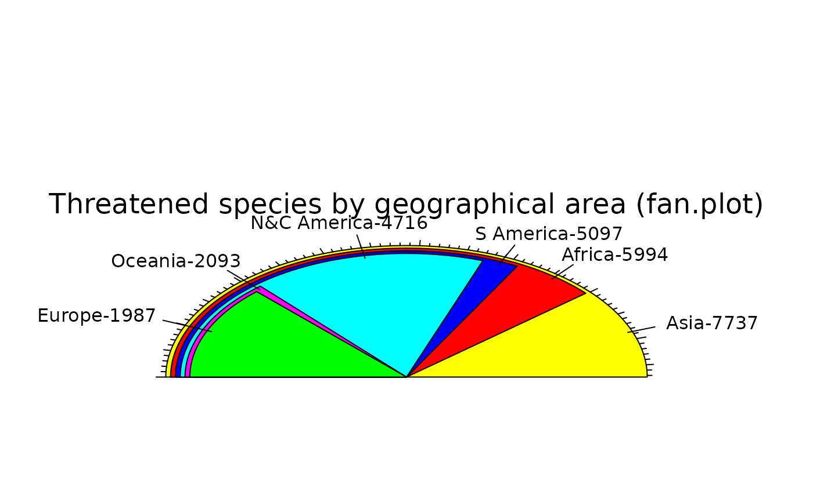

Display a fan plot
fan.plot.RdDisplays numerical values as the arcs of overlapping sectors.
Usage
fan.plot(x,edges=200,radius=1,col=NULL,align.at=NULL,max.span=NULL,
labels=NULL,labelpos=NULL,label.radius=1.2,align="left",shrink=0.02,
main="",ticks=NULL,include.sumx=FALSE,...)Arguments
- x
Vector of numbers.
- edges
The number of edges with which to draw a circle.
- radius
The radius of the sectors.
- col
The colors with which to fill the sectors.
- align.at
Where to align the sectors (see Details).
- max.span
The angle of the maximal sector in radians. The default is to scale x so that it sums to 2*pi.
- labels
Labels placed around the sector arcs.
- labelpos
Optional circumferential positions for the labels.
- label.radius
How far away from the sectors the labels will be placed. May be a vector with a radius for each label.
- align
Position of the alignment of sectors (see Details).
- shrink
How much to shrink each successive sector in user units.
- main
Optional title for the plot.
- ticks
The number of ticks that would appear if the sectors were on a pie chart. Default is no ticks, TRUE gives the number of ticks equal to the integer sum of x, which is fairly sensible if x is a vector of integers.
- include.sumx
Whether to include the sum of all x values as the largest sector.
- ...
Additional arguments passed to polygon.
Details
fan.plot displays sectors much like a pie chart except that the sectors are overlapped. this allows the angular extents of the sectors to be visually compared much more accurately by the viewer. Sectors are plotted from the largest to the smallest, shrinking the radius of each successive sector.
When sending output to the postscript device, the resulting image can be trimmed by changing the values in BoundingBox in the header with a text editor.
Value
The circumferential positions of the labels in radians. These are returned in order of decreasing size of the values plotted.
Examples
iucn.df<-data.frame(area=c("Africa","Asia","Europe","N&C America",
"S America","Oceania"),threatened=c(5994,7737,1987,4716,5097,2093))
fan.plot(iucn.df$threatened,max.span=pi,
labels=paste(iucn.df$area,iucn.df$threatened,sep="-"),
main="Threatened species by geographical area (fan.plot)",ticks=276)
